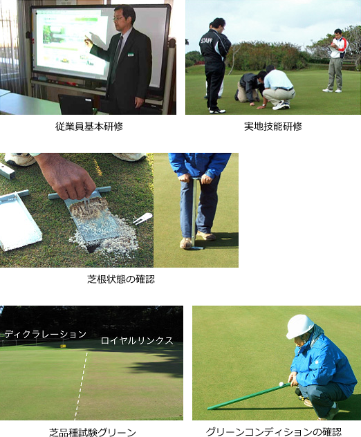

Group Company
株式会社石勝グリーンメンテナンス
またプレーしたくなる美しいゴルフコースをめざして
石勝グリーンメンテナンスは、ゴルフ場のコース管理を専門に手がける会社です。
1977年、勝浦東急ゴルフコースの開業とともに誕生し、1992年に石勝エクステリアより分離独立しました。その後も、石勝グループの一員として着実な成長を続け、現在では全国26カ所でコース管理を行っています。社員数は300名を超え、業界でもトップクラスの規模を誇っています。
私たちがめざすのは、プレーヤーが「またチャンレジしたい」と思える魅力的なコースづくりです。そのために、繊細な芝草を扱う専門家であるグリーンキーパーが日々、プレーヤーが思う存分にパフォーマンスを発揮できるコースコンディションの維持・向上に取り組んでいます。芝生の整備にとどまらず、クラブハウスやコースに広がる景観そのものを美しく保つこともまた、私たちの大切な仕事です。
さらに、グリーンの状態を熟知した私たちは、設計・施工を行う石勝エクステリアとともに、より戦略性を高めるためのコース改修を積極的に提案しています。バンカー砂再生工法「Reバンカー」などの独自工法を活用し、たしかな技術力とデザイン力を遺憾なく発揮しながら、美しいコースの実現を図っています。
プレーヤーの皆さまに愛され、親しまれ、そして支持されるゴルフコースへ。
石勝グリーンメンテナンスでは、今後も人材育成や技術向上に努め、自然と調和した理想のゴルフコースを追求してまいります。
| 商 号 | 株式会社 石勝グリーンメンテナンス |
|---|---|
| 代表者 | 代表取締役社長 細井俊宏 |
| 開 業 | 昭和52年4月 |
| 設 立 | （ゴルフ場メンテナンス会社として分離独立） |
| 本 社 | 神奈川県横浜市青葉区新石川3-34-1 |
| 資本金 | 10,000,000円 |
| 社員数 | 292名（現在） |
| 事業所 | 本社（横浜） 他全国25ヶ所のゴルフコース管理事業所 ※作業所含む |
| 建設業許可 | 国土交通大臣許可（般-24）第22453号 造園工事業 |
| 資本構成 | 株式会社石勝エクステリア（東急不動産99.9％） 株式会社石勝グリーンメンテナンス（石勝エクステリア100％） |
現在、キャリア採用を募集しています。詳しくはこちらをご覧ください
| 本社 | 〒225-0003 神奈川県横浜市青葉区新石川3-34-1 |
TEL 045-912-7591 FAX 045-912-7599 |
|---|---|---|
| 那須事業所 | 〒325-0302 栃木県那須郡那須町大字高久丙1793-3 |
TEL 0287-76-3532 FAX 0287-76-4098 |
| 東松苑作業所 | 〒329-4217 栃木県足利市駒場町1234 |
|
| 板倉事業所 | 〒374-0132 群馬県邑楽郡板倉町大字板倉777-1 |
TEL 0276-70-4171 FAX 0276-70-4172 |
| サミット事業所 | 〒315-0114 茨城県石岡市嘉良寿理清水田154 |
TEL 0299-44-1435 FAX 0299-44-1424 |
| 猿島事業所 | 〒306-0505 茨城県坂東市菅谷2268番地 |
TEL 0280-88-8261 FAX 0280-88-7270 |
| 筑波事業所 | 〒300-4204 茨城県つくば市作谷862-1 |
TEL 029-846-1687 FAX 029-846-1688 |
| 700クラブ 事業所 | 〒267-0063 千葉県千葉市緑区小山町359-6 |
TEL 043-294-3998 FAX 043-294-9714 |
| 小見川事業所 | 〒289-0307 千葉県香取市増田418-1 |
TEL 0478-82-0914 FAX 0478-83-2274 |
| 季美の森事業所 | 〒299-3241 千葉県大網白里市季美の森南2-4 |
TEL 0475-73-3232 FAX 0475-73-3246 |
| 芝山事業所 | 〒289-1605 千葉県山武郡芝山町大台2347 |
TEL 0479-77-0293 FAX 0479-77-0283 |
| 鶴舞事業所 | 〒290-0515 千葉県市原市田尾1293 |
TEL 0436-88-3644 FAX 0436-88-3645 |
| 大多喜事業所 | 〒298-0223 千葉県夷隅郡大多喜町上原1090番地 |
TEL 0470-82-5039 FAX 0470-82-5059 |
| 勝浦事業所 | 〒299-5265 千葉県勝浦市植野1353-5 |
TEL 0470-76-2417 FAX 0470-76-4061 |
| 麻倉事業所 | 〒285-0077 千葉県佐倉市内田743 |
TEL 043-498-3545 FAX 043-498-0319 |
| 成田ハイツリー事業所 | 〒289-2303 千葉県香取郡多古町大門659番地 |
TEL 0479-75-1510 FAX 0479-75-1511 |
| 君津事業所 | 〒292-0511 千葉県君津市大坂1228-1 |
TEL 0439-29-3902 FAX 0439-29-3770 |
| 武蔵の杜事業所 | 〒355-0363 埼玉県比企郡ときがわ町大附689 |
TEL 0493-65-2199 FAX 0493-81-3453 |
| 川崎生田事業所 | 〒214-0032 神奈川県川崎市多摩区枡形7-1-18 |
TEL 044-543-8826 FAX 044-911-3882 |
| 亀岡事業所 | 〒621-0124 京都府亀岡市西別院町柚原東深谷9番地 関西カントリークラブ 管理棟 |
TEL 0771-27-2138 FAX 0771-27-2140 |
| 吉川事業所 | 〒673-1121 兵庫県三木市吉川町米田字平間701 |
TEL 0794-72-1811 FAX 0794-72-0168 |
| 三木事業所 | 〒673-1121 兵庫県三木市口吉川町善祥寺字本谷72-5 |
TEL 0794-88-0155 FAX 0794-88-2523 |
| 東広野事業所 | 〒673-0515 兵庫県三木市志染町三津田1525-8 |
TEL 0794-70-9001 FAX 0794-70-9014 |
| 高室池事業所 | 〒673-147 兵庫県加東市上三草字中山1132-3 |
TEL 0795-42-8197 FAX 0795-42-8198 |
| 小野事業所 | 〒675-1343 兵庫県小野市来住町1225 |
|
| エメラルドコースト事業所 | 〒906-0305 沖縄県宮古島市下地字与那覇1591-1 |
TEL 0980-76-2297 FAX 0980-76-3315 |
